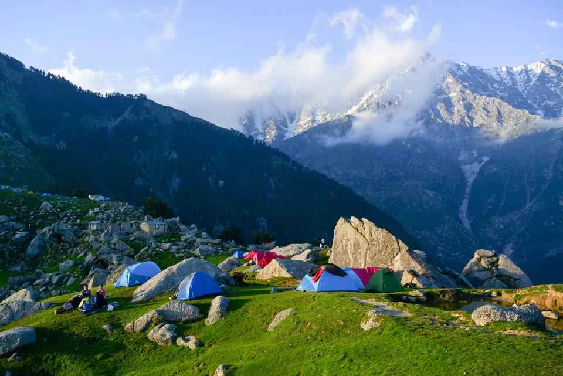

BEST TIME TO VISIT
Both the winter and summer seasons are the best time to visit Dharamshala. While in summer, tourists can enjoy paragliding and trekking, the winter season allows pleasant weather. March through June is the most popular time to visit Dharamshala.
START- NEW DELHI TO DHARAMSHALA
As per this itinerary, you will be dividing your time between Dharamshala and Mcleodganj. Your stay too will be at both of these places.
Get an early start from Delhi and reach Dharamshala in the morning
DAY 1 : Sightseeing in Dharamshala
Your day will be spent in Dharamshala itself visiting the local place
- Visit the Dalai Lama Temple.
- Visit the HPCA Stadium, also known as Dharamshala Cricket Stadium. It is one of the highest cricket stadiums in the world.

- Visit the Dharamshala War Memorial, built in the memory of war heroes and their efforts to protect their motherland.
- Spend the rest of the day exploring the local market, always bustling with colors and energy all around. Do some shopping if you would like to and pick a few souvenirs.
- Return to the hotel and step out to have dinner at any of the numerous and magnificent restaurants in the town.
DAY 2 : Dharamshala to Mcleodganj
Head towrads Macleodganj in a personal taxi and check-in in one of finest Hotels in Subrub
- Get ready for Sightseeing and Your first destination will be Bhagsu Nag Temple and Waterfall.
- Take a drive to Saint John in the Wilderness Church.
- Enjoy a boat ride in Dal Lake.

- Have something Tibetan, Israeli or even Indian at any a local restaurant in the evening.
- Night stay at Mcleodganj.
- Enjoy the cultural folk dance of kangra
DAY 3 : Trekking to TRIUND TOP

Triund is a small hill station in the Kangra district in the state of Himachal Pradesh, India. Triund is a part of Dharamkot. Triund is at the foot of the Dhauladhar ranges and is at a height of 2,828 m.
- 10:00 AM - Meet us at Dharamkot, which is less than 2 km from McLeodganj. We will start our trek from here. Prepare yourself to watch the scenic views of nature.
- For beginners, this trek will take around 4-5 hours. We will move at a comfortable pace, exploring the trail, peeking through the dense forest
- We will reach Triund before the sunset as that is the one thing that you cannot miss on this trek. Once you’ve witnessed the absolute beauty of the sunset, you can never forget it for life.
- In the star-studded night time, we will start our story-swapping session around the campfire, and enjoy our scrumptious dinner.
- You can retire to your tent for the night.
NOTE : Trekking activity depends on weather conditions , in case of bad weather the activity might get cancelled and in that case no refund will be entertained .